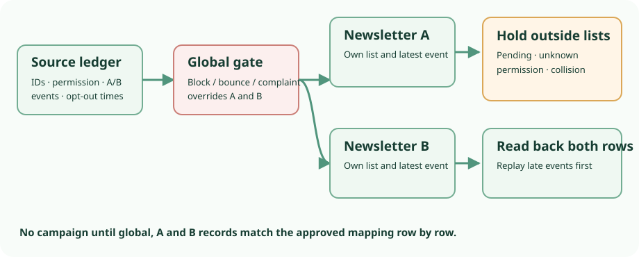

Two-newsletter migration · 16 Oct 2026 · source audit
Move two newsletters without reviving an opt-out.
Keep and repair the current email service first if it can represent newsletter A and B separately, retain suppressions and show permission history. A new system cannot supply missing consent evidence. If those records are incomplete, hold the affected contacts outside every sendable audience before considering an import.

First route: inspect and repair the existing service
Mailchimp is a documented example, not an assumption about the current provider. Its contact-export help describes separate subscribed, non-subscribed, unsubscribed and cleaned files, and possible permission and opt-in fields. It says signup source and complete profile-update history are omitted. Its contact types include pending, but ordinary export help does not establish a complete pending CSV. Archived records need a separate check. Inspect actual exports, contact records and account backup routes; an absent file is not proof that a contact type has zero rows.
Mailchimp says audiences are independent for unsubscribes. Inspect whether A and B are separate audiences, groups, tags or a preference field, then test A-only, B-only and global exclusions in the real provider. A tag is not automatically an independent opt-out scope. A lower-change repair is useful only if the source can show the right records and enforce the intended exclusions.
No-send state contract before an import
| Source state | Mapping rule | Send decision |
|---|---|---|
| Confirmed A; B opted out | Keep A and B records separate. Preserve B opt-out time and source. | A possible only after evidence checks; B no-send. |
| Global block, hard bounce or complaint | Keep the event reason/time in an external ledger; global suppression overrides both lists. | A and B no-send. |
| Pending or unknown permission | Do not put the row on a sendable list merely to hold it. Seek the source confirmation or permission record. | A and B no-send while unresolved. |
| Duplicate, target collision or late cutover event | Use source IDs, address-change evidence and event chronology. A later opt-out wins until a validated later re-opt-in. | Hold until row-level comparison and replay. |
The reconciliation ledger needs original and normalized email, source IDs, A/B status and times, global suppression and reason, permission source/scope/time, target ID, collision outcome, exception owner and proposed A/B send decision. Do not infer a changed address is the same person from a similar name. A target confirmed value cannot create a missing source opt-in record.
Listmonk v6.2.0: two unsafe holding assumptions
The tagged regular-campaign recipient query excludes globally blocklisted subscribers, not all disabled subscribers. It excludes unsubscribed list rows; on a single-opt-in list that can include unconfirmed rows. Double-opt-in campaigns select confirmed rows. Thus disabled is not a generic no-send flag, and unconfirmed is not a safe generic hold on single-opt-in lists. Keep pending and unknown-permission records outside sendable lists. This is a scoped reading of the inspected count and selection paths, not an observed send.
The tagged schema has global enabled/disabled/blocklisted and per-list unconfirmed/confirmed/unsubscribed states. CSV import accepts email, name and attributes; selected lists and subscription_status apply to an import session, not each row. A flat A/B CSV therefore cannot express all nine cases. The tagged importer and email-keyed upsert require staged actions or an external transformation followed by read-back.
overwrite=true maps to user-info and subscription-status overwrite: an existing A unsubscribed row can become imported confirmed on collision. With overwrite false, existing per-list statuses remain, yet a missing list association can still be inserted. This is narrower than the living import API wording that says an existing record is ignored. Neither setting is a permission policy. In blocklist import mode, the tagged SQL globally blocklists and unsubscribes existing list rows; subscribe mode leaves an already blocklisted global state unchanged. Confirm both before and after the full import sequence.
Tagged subscriber handlers make PUT replace list membership; PATCH without lists retains it, while an explicit lists value replaces it. The list add action can change an existing row's status. The tagged public preference handler omits private lists and has its own unsubscribe behavior. Check the actual list modes and public settings in a target trial; do not call any of these paths an “add only” or consent-safe shortcut.
Fictional nine-contact reconciliation card
All addresses use example.invalid. A+ and B+ mean only potential eligibility after the stated checks; they do not mean a send is authorized. This is a proposed mapping, not observed Listmonk output.
| Contact and source state | Proposed A / B | Required check |
|---|---|---|
C01 a_only@example.invalid: A confirmed; B opted out. | A+ / B− | Verify A permission and latest B opt-out; read back both list rows. |
C02 b_only@example.invalid: A opted out; B confirmed. | A− / B+ | Verify B permission and no later global block. |
C03 bounce@example.invalid: hard bounce after earlier A/B confirmations. | A− / B− | Global blocklist read-back; retain bounce reason/time externally. |
C04 pending@example.invalid: A confirmation pending; B absent. | A− / B− | Hold outside sendable lists until source confirmation is located. |
C05 duplicate@example.invalid: distinct A/B source IDs, A confirmed, B unsubscribed. | A+ / B−, conditional | Reconcile identity and any global event; do not copy A's positive state to B. |
C06 unknown@example.invalid: A says subscribed; permission source/time absent. | A− / B− | Find permission evidence or exclude. |
C07 overlap@example.invalid: source A confirmed at T1; target A unsubscribed at later T2. | A− / B− | Preserve target opt-out; investigate collision before any overwrite. |
C08 changed@example.invalid: old address A unsubscribed; new address A confirmed; identity link unverified. | A− / B− | Hold both addresses; establish identity and chronology, not similarity of names. |
C09 cutover@example.invalid: A/B confirmed at snapshot T1; B opt-out at T2. | A+ / B−, conditional | Replay T2 and read back before any campaign resumes. |
For this invented card, possible A eligibility is C01/C05/C09 (3) and possible B eligibility is C02 (1), only if their checks pass. One identity is globally blocked; C04/C06/C07/C08 are held. C05 and C09 remain conditional. Aggregate counts cannot replace row-level parity: a swapped opt-out can leave totals unchanged.
No-send dry run and rollback gate
- Inventory every source contact type, A/B membership, permission record and suppression event, including pending, cleaned and archived where available. Record gaps instead of treating unavailable data as zero.
- Take a timestamped snapshot and preserve an authoritative event stream through cutover. Pause sending and log who can still edit preferences.
- Map and deduplicate deterministically. Record target overlaps and later opt-outs as exceptions. Never let an older positive import overwrite a later no-send event.
- Only in an isolated, pinned, sink-only trial, stage the proposed import with no real contacts, schedules or sender credentials. This audit did not run that trial.
- Read back each global and A/B list state by target identity; compare every row and counts by status. Replay late opt-outs and bounces, then compare again. Import progress or API success is not parity.
- Stop if a preference, suppression, permission, collision, event sequence or restore state remains unresolved. An authorized operator must approve any first live send.
- For abort, retain source and target pre-import snapshots and the event ledger; disable new schedules and sender access, reconcile mutations and queued work, and keep the old service authoritative.
Operating and evidence limits
The v6.2.0 release and tagged README identify a PostgreSQL-backed, AGPLv3-declared application. The tagged licence establishes the repository declaration, not a full dependency, image, binary or service licence audit. Listed release assets and checksums were not downloaded or independently checked. Current installation, configuration and upgrade guidance inform an operator checklist: PostgreSQL and configuration/secrets backup, sender settings, scheduled/running work and a restore rehearsal. That checklist is an inference, not an executed restore recipe. No source-to-binary provenance or sink-only egress proof was established.
Current Keila contact help offers a duplicate-import checkbox that replaces or leaves existing contacts; it does not settle per-newsletter preference, permission history or suppression parity. Historical Listmonk issue #2976 and issue #3250 suggest state-transition test cases, not proof of those defects in v6.2.0. The actual provider, export completeness, target build, package digest, list settings, import results, delivery and recovery all remain unknown. A later exact-build test should focus on unsubscribed-row import, list add and preference changes; this report does not infer provider acceptance or permission sufficiency.
Conditional choice: retain and repair the existing service when it can preserve the A/B and global contract; trial Listmonk v6.2.0 only if the operation accepts the collision policy, row-level parity, cutover/rollback and PostgreSQL/sender burden; postpone moving if permission or recovery evidence remains incomplete.